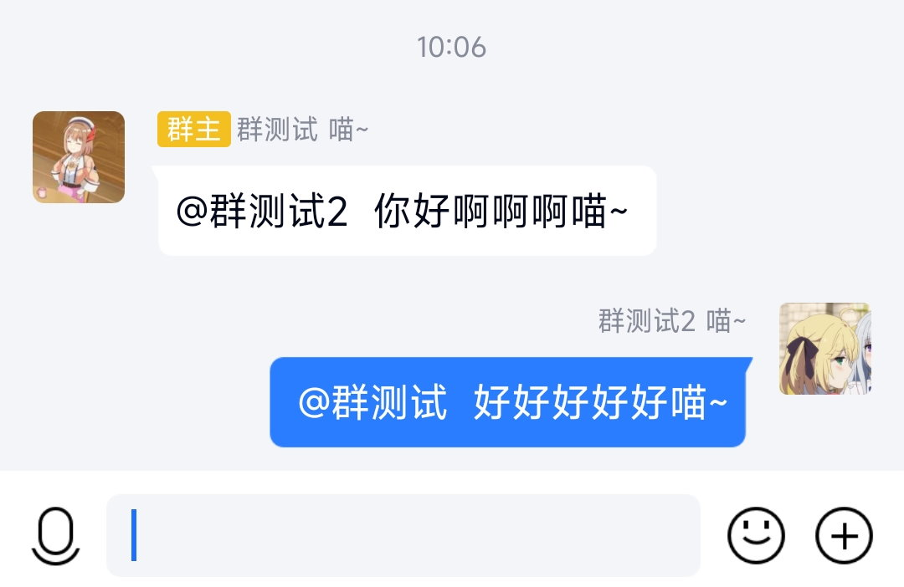
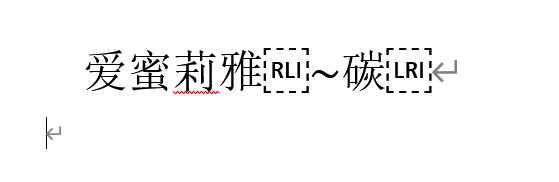

扩展昵称生成器
效果：当别人@你时，会在@的文字后面加上一另段文字。下图结尾的「喵~」不是发送者输入的。

原理：用unicode控制字符

RLI
和LRI
包裹倒序的后缀部分，在别人@后，@后面的文本会跑到被包裹部分的前面去。例如：昵称设置为「阿斯蒂芬RLI
~喵LRI
」，别人看到的昵称会是「阿斯蒂芬喵~」，若别人输入「@阿斯蒂芬喵~ 你好」则会变成「@阿斯蒂芬 你好喵~」。
验证昵称格式：把结果复制到 Word 中可以看到控制字符，但 Word 内显示的后半部分是前后反转的，粘贴到 QQ 昵称后会自动变回来。最终昵称在 Word 内必须要显示出两个控制字符（分别 RLI 和
LRI）才能正确触发此特性。
可以在网页生成后立即粘贴到 QQ 昵称中，也可以先复制到 Word 中，再从 Word 中复制到 QQ 昵称中。若使用后者，请注意完整选择这一行，不要漏选最后一个不可见字符。
基本生成
这是个一键昵称生成器。
前半部分
后半部分
结果1
unicode
修复生成
此控制字符对汉字不稳定，混合汉字和字符可能导致意外的顺序。若上结果有误，下面是没有反转的字符。
结果2
文本反转
这是一个字符串反转实用工具
输入
输出
自定义模板
如果你对以上工具的自由度不满意，下面是一个高自由度的文本生成器。使用
#r
表示 RLI 字符，使用#l
表示 LRI 字符。
输入模板字符串
输出
附：下面是完成这一算法的 Python 代码
def wrap_control_char(text: str) -> str:
""" wrap the text with RLI and LRI. text will be reversed. """
return '\u2067' + text[::-1] + '\u2066'
def make_name(pretext: str, aftertext: str) -> str:
"""make the name with pretext and aftertext. aftertext will be reversed.
Args:
pretext (str): the former part of the name
aftertext (str): the latter part of the name
Returns:
str: the name with control characters
"""
return pretext + wrap_control_char(aftertext)
if __name__ == '__main__':
s = make_name('群测试 ', '喵~')